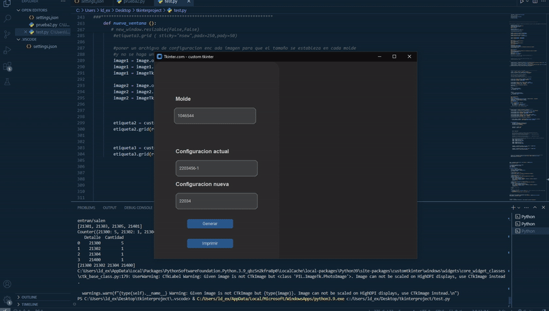

Motivación
En muchas empresas, la calidad de la información sigue siendo un desafío, a pesar de ser crucial para el éxito de cualquier proyecto. La falta de datos claros y precisos puede influir directamente en los resultados.Este sistema surge de una necesidad personal, basada en mi experiencia laboral al identificar las fallas comunes en estas actividades. Además, integra conocimientos sobre sistemas de información, herramientas clave en las empresas actuales, que no solo permiten cumplir objetivos, sino también proyectarse estratégicamente hacia el futuro para destacar frente a la competencia.
Introducción
La aplicación pretende fijar procedimientos que se adapten al entorno de trabajo, con la finalidad de responder a cambios de configuración de manera eficaz en el menor tiempo posible. La herramienta fue diseñada para auxiliar al técnico a realizar los cambios de configuración en cada molde que lo requiera, aunque la base de la aplicación puede ser aplicada en actividades similares, por lo que esta libreta pretende ilustrar la arquitectura del software y hardware necesaria para lograr dicho objetivo.
Estructura de la Aplicación
Un molde de inyección de plástico está compuesto por múltiples elementos, y para realizar cambios en su configuración es necesario intercambiar dichos elementos, con el fin de obtener una forma diferente en el producto final.El proceso para realizar estos cambios se lleva a cabo de la siguiente manera:
Cada molde se identifica mediante un número único, compuesto por dos cifras iniciales, un guion, y un número de siete cifras que conforma el identificador completo del molde.
Un único molde puede estar asociado a una sola familia con una o varias configuraciones, o a un conjunto de familias, cada una con su propio subconjunto de configuraciones posibles.
Resultados
La aplicación fue creada en Python al ser un sistema altamente compatible con la arquitectura de la distribución de archivos. Esta consiste en un formulario con 3 campos de texto.- Ingresar el número de molde
- Ingresar la configuración actual
- Ingresar la nueva configuración
